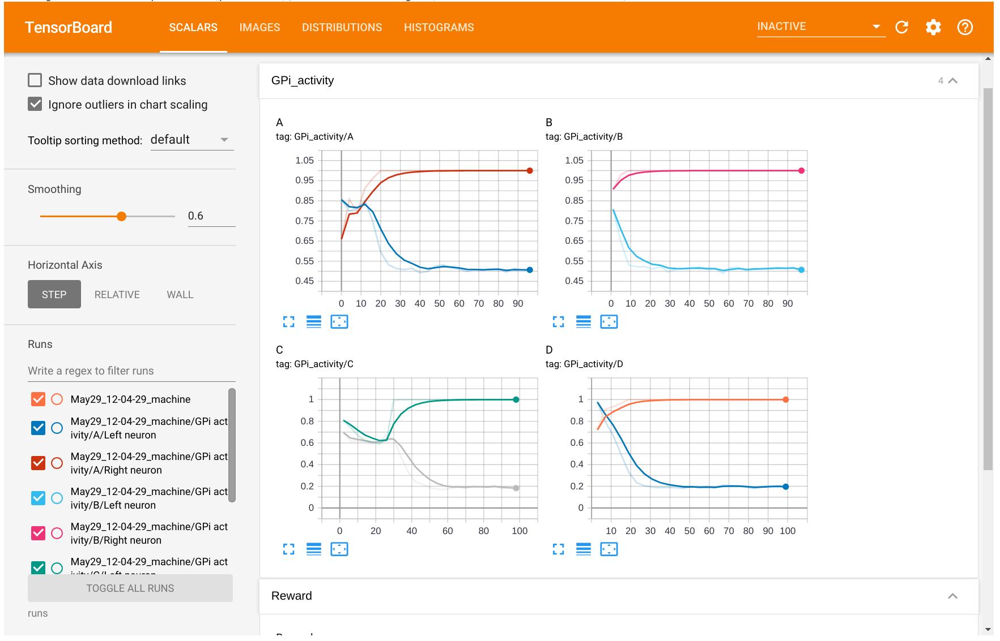

Logging with tensorboard#
The tensorboard extension allows to visualize ANNarchy simulations
using tensorboard. It requires the tensorboardX package:
pip install tensorboardX
as well as tensorboard, of course:
pip install tensorboard
The Logger class is a thin wrapper around tensorboardX.SummaryWriter,
which you could also use directly. The doc is available at
https://tensorboardx.readthedocs.io. Tensorboard can read any logging
data, as long as they are saved in the right format (tfevents), so it is
not limited to tensorflow. TensorboardX has been developed to allow the
use of tensorboard with pytorch.
The extension has to be imported explicitly:
from ANNarchy import *
from ANNarchy.extensions.tensorboard import Logger
For detailed examples of how to use the extension, refer to the examples
Basal Ganglia and
Bayesian optimization, which
are available as notebooks in the folder examples/tensorboard.
Creating the logger#
The Logger class has to be closed properly at the end of the script,
so it is advised to use a context:
with Logger() as logger:
logger.add_scalar("Accuracy", acc, trial)
You can also make sure to close it:
logger = Logger()
logger.add_scalar("Accuracy", acc, trial)
logger.close()
By default, the logs will be written in a subfolder of ./runs/ (which
will be created in the current directory). The subfolder is a
combination of the current datetime and of the hostname, e.g.
./runs/Apr22_12-11-22_machine. You can control these two elements by
passing arguments to Logger():
with Logger(logdir="/tmp/annarchy", experiment="trial1"): # logs in /tmp/annarchy/trial1
Launching tensorboard#
After (or while) logging data within your simulation, run
tensorboard in the terminal by specifying the path to the
log directory:
tensorboard --logdir runs
You will then be asked to open localhost:6006 in your
browser and will see a page similar to this:

The information logged will be available in the different tabs (scalars, images...). You can also visualize and compare several experiments at the same time.
Logging scalars#
The add_* methods allow you to log various structures, such as
scalars, images, histograms, figures, etc.
The simplest information to log is a scalar, for example the accuracy at the end of a trial:
with Logger() as logger:
for trial in range(100):
simulate(1000.0)
accuracy = ...
logger.add_scalar("Accuracy", accuracy, trial)
A tag should be given for each plot as the first argument. In the example above, the figure with the accuracy will be labelled \"Accuracy\" in tensorboard. You can also group plots together with 2-levels tags such as:
with Logger() as logger:
for trial in range(100):
simulate(1000.0)
train_accuracy = ...
test_accuracy = ...
logger.add_scalar("Accuracy/Train", train_accuracy, trial)
logger.add_scalar("Accuracy/Test", test_accuracy, trial)
The second argument is the scalar, obviously. The third is the index of x-axis of the plot. It can be the index of the trial, the current time or whatever you prefer.
If you want to display several scalars on the same plot, you can use the
method add_scalars() and provide a dictionary:
with Logger() as logger:
for trial in range(100):
simulate(1000.0)
train_accuracy = ...
test_accuracy = ...
logger.add_scalars("Accuracy", {'train': train_accuracy, 'test': test_accuracy}, trial)
Logging images#
It is also possible to log images, for example an input image or the
firing rate of a 2D population, with the add_image() method:
with Logger() as logger:
for trial in range(100):
simulate(1000.0)
img = pop.r.reshape((10, 10))
logger.add_image("Population/Firing rate", img, trial)
The image must be a numpy array of size (height, width) for monochrome images or (height, width, 3) for colored images.
The values must be floats between 0 and 1 or integers between 0 and 255
in order to be displayed correctly. You can either do it yourself, or
pass equalize=True to the add_image():
logger.add_image("Population/Firing rate", img, trial, equalize=True)
The min/max values in the array are internally used to rescale the image:
img = (img - img.min())/(img.max() - img.min())
To display several images together, for example the receptive fields of
a population, an array of size (number, height, width) or (number,
height, width, 3) can be passed to add_images(), where number is the
number of images to display:
with Logger() as logger:
for trial in range(100):
simulate(1000.0)
weights= proj.w.reshape(100, 10, 10) # 100 post neurons, 10*10 pre neurons
logger.add_images("Projection/Receptive fields", weights, trial, equalize=True)
equalize=True applies the same scaling to all images, but you
additionally pass equalize_per_image=True to have indepent scalings
per image.
Logging histograms#
Histograms can also be logged, for example to visualize the statistics of weights in a projection:
with Logger() as logger:
for trial in range(100):
simulate(1000.0)
weights= proj.w.flatten()
logger.add_histogram("Weight distribution", weights, trial)
Logging figures#
Matplotlib figures can also be logged:
with Logger() as logger:
for trial in range(100):
simulate(1000.0)
fig = plt.figure()
plt.plot(pop.r)
logger.add_figure("Activity", fig, trial)
add_figure() will automatically close the figure, no need to call
show().
Beware that this is very slow and requires a lot of space.
Logging parameters#
The previous methods can be called multiple times during a simulation, in order to visualize the changes during learning.
add_parameters() is more useful in the context of hyperparameter
optimization, where the same network with different parameters is run
multiple times.
Only once per simulation, typically at the end, you can log the value of some important parameters together with some metrics such as accuracy, error rate or so. This will allow tensorboard to display over multiple runs the relation between the parameters and the metrics in the tab "HPARAMS":
with Logger() as logger:
# ...
logger.add_parameters({'learning_rate': lr, 'tau': tau}, {'accuracy': accuracy})
Refer to Bayesian optimization
for an example using the hyperopt library.